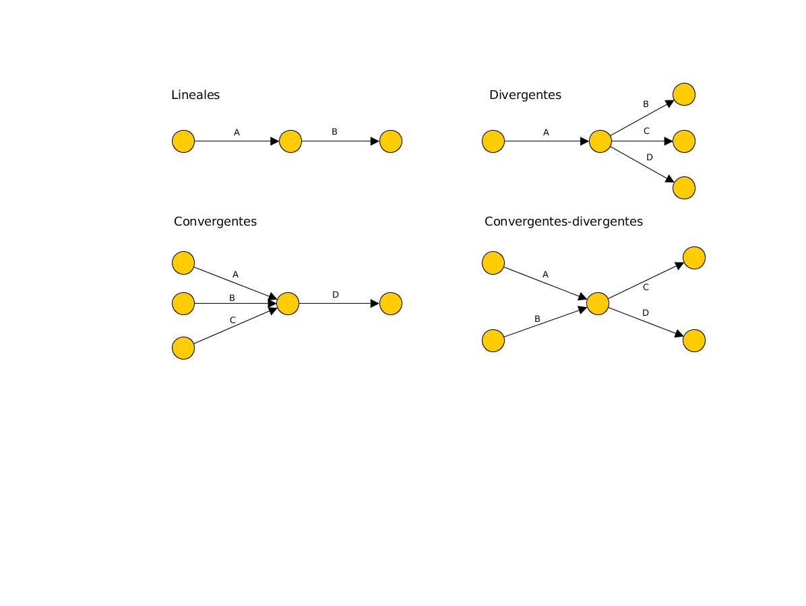

Planificación Temporal
Mikel Egaña Aranguren
Gestión de Proyectos (GP)
Planificación Temporal: Gantt, PERT, CPM
Mikel Egaña Aranguren (mikel.egana@ehu.eus)

Planificación Temporal
Ya sabemos:
- Qué tareas hay que realizar
- Cuánto tiempo necesitamos para cada tarea
- Quién va a realizar cada tarea
¿Cómo las distribuimos en el tiempo?
Diagrama de Gantt
- Cuadro bidimensional:
- Eje horizontal: tiempo
- Eje vertical: tareas
- Tarea: bloque rectangular (longitud = duración)
- Posición del bloque: inicio y fin de tarea
Diagrama de Gantt
- Sólo representa la elección del autor
- No refleja (ni justifica ni permite conocer):
- Orden óptimo de las actividades
- Plazo mínimo de ejecución del proyecto
- Efectos de retrasos
- Para ello se usan técnicas de planificación como PERT, CPM, ROY, Precedencias, ...
Técnicas de planificación: Objetivos
- Determinar qué tareas son necesarias y cuándo
- Buscar el plazo mínimo de ejecución del proyecto
- Buscar ligaduras temporales entre tareas
- Identificar las tareas críticas (Si se retrasan, afectan a todo el proyecto)
- Identificar el camino crítico (Formado por tareas críticas)
- Detectar holguras (Tiempo que puede retrasarse una tarea sin afectar al proyecto)
PERT (Program Evaluation and Review Techniques)
- Hay que ordenar las tareas:
- ¿Qué se puede hacer ahora?
- ¿Qué tiene que estar hecho ya?
- ¿Qué podría hacerse a la vez?
- ¿Qué debe ser lo siguiente?
PERT (Program Evaluation and Review Techniques)
- El resultado es un grafo donde:
- Los nodos representan momentos en el tiempo (sucesos)
- Los arcos representan tareas (Cada tarea aparece una única vez en el grafo)
- Sólo puede haber un arco (directo) entre dos nodos
Tipos de Precedencias

Recoger Precedencias
Matriz de encadenamientos: para comenzar la tarea de la fila, finalizar la de la columna
Recoger Precedencias
Cuadro de precedentes: tareas, precedentes
Actividades Ficticias
Actividades que no consumen tiempo ni recursos (Reflejan relaciones entre actividades)
Se usan cuando dos o más actividades tienen algunas precedentes comunes, pero no todas (A y B preceden a C, pero B sólo precede a D)
Tenemos a la vez relaciones lineales (B --> D) y convergentes (A,B --> C) o divergentes.
Actividades Ficticias

Actividades Ficticias
Se usan cuando entre dos sucesos se desarrollan varias actividades.
Por ejemplo A, B, y C preceden a D (Tenemos actividades paralelas entre dos sucesos).
Ejemplo
Calcular holgura total
Calcular holgura libre
Encontrar camino crítico
Ejemplo
Asumimos un proyecto con las precedencias:

Ejemplo
[Tarea] Construir grafo de dependencias
Ejemplo
Grafo de dependencias
Ejemplo
Numerar los nodos de izquierda a derecha y de arriba abajo

Ejemplo
Calcular duración de cada actividad
\[ D = {E_O+4E_M+E_P \over 6} \]
- EO = Estimación optimista
- EM = Estimación más probable (modal)
- EP = Estimación pesimista
Ejemplo
Añadir duración a cada actividad: